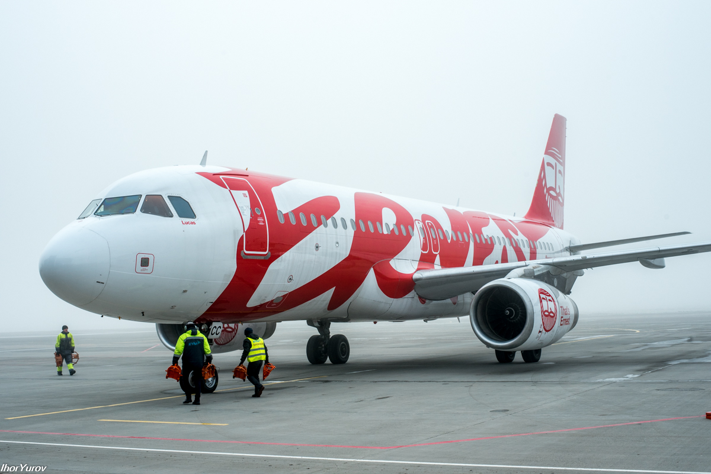
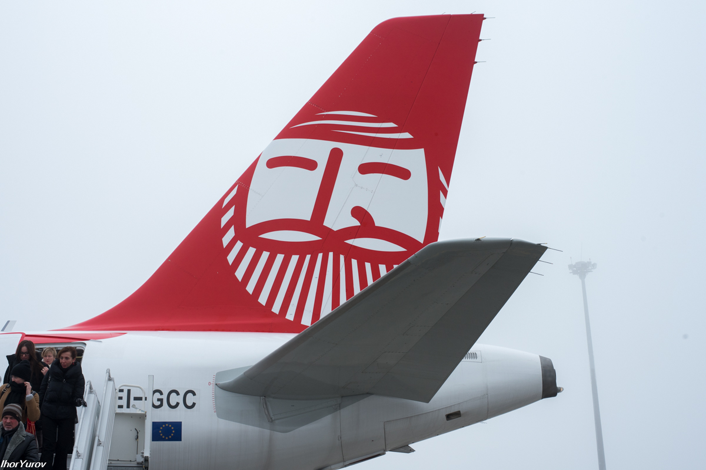
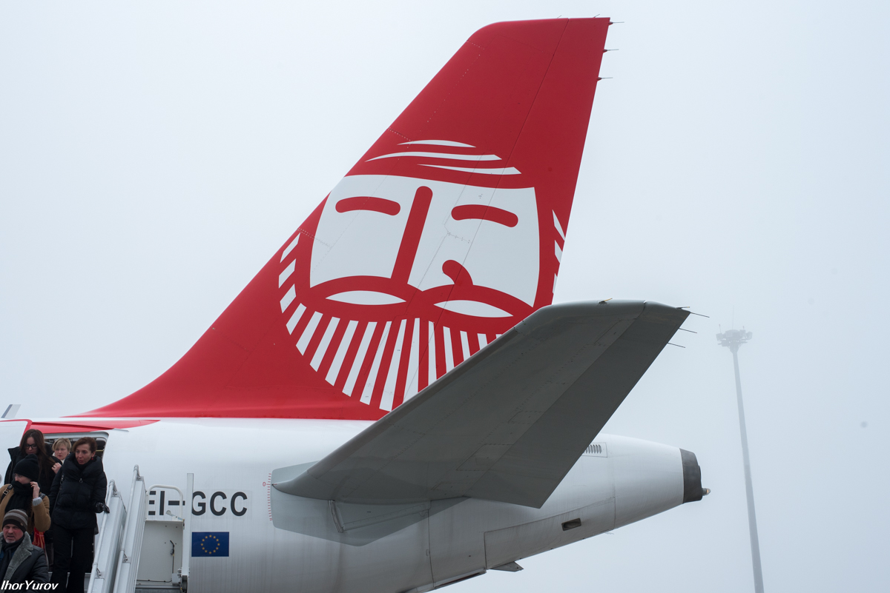

Диалог с Эрнестом
10/12/2017

- Представляешь, вчера, в субботу, 9 декабря 2017 года, я имел честь быть на презентации новой в Киеве итальянской авиакомпании ERNEST AIRLINES.
- Да я тоже вообще-то там присутствовал, непосредственно... что с того?
- Ничего, что я добрался с 4 пересадками на брифинг, мне пришлось даже бежать несколько раз, чтобы успеть к началу? Да, и выйдя из дома, вспомнил, что нужен паспорт, пришлось возвращаться.
-Та ты просто проспал, бывает. И как тебе, понравился сабантуйчик?
- Конечно, еще бы не понравился. Мне дали аккредитацию, выдали временный пропуск, для прохождения контроля безопасности, чтобы пройти прямо на взлетную полосу встречать первый рейс из Италии. Потом брифинг. А фуршет был просто потрясающий, шампусик, обалденный торт. Общался с парнем, который как и я, только вернулся с Копена, в смысле Копенгагена.
-Ну и что?
- А то, что это еще одна наша маленькая победа в стране, понимаешь? И то, что за не очень большие деньги я смогу слетать в Италию на выходные, вдоволь нагуляться по городу, поесть настоящей итальянской пиццы, лазаньи, выпить Брунелло ди Монтальчино.
- Что для тебя это так важно, можно ведь и дома все это съесть?
- Нет Эрнест, ты не понимаешь меня. Ну да, ты повидал разные страны, города, а я только начинаю свой путь путешественника и мне все это очень и очень интересно. Я хочу увидеть этот мир целиком, не огрызок, а весь. Мне интересно все, хочется посмотреть на итальянцев и итальянок тоже, послушать их красивую речь, прокатиться на метро, в трамваях и в городских автобусах. Увидеть своими глазами, как обустроены их города, посмотреть на удобства, которые они создают для более комфортной жизни, посмотреть как выглядят их дома и что нового построено.
- Так ведь все это сейчас можно узнать в интернете, может лучше приберечь деньжата, времена-то не легкие?
- Нет, нет, нет, ты не понимаешь, это совсем другое. Представь, что ты смотришь в ютубе как кто-то смакует икру черную, ты видишь ее - икру, но не пробуешь, не слышишь ее запаха и вкуса, это ли удовольствием можно назвать? Когда я летел первый раз, по безвизу, в немецкий Ганновер, я готовился несколько месяцев. Купил в Киеве, недалеко от Олимпийской, карту Ганновера, перечитал много информации об этом городе и его особенностях. Так вот, у меня было такое сильное желание обойти пешком каждую улочку этого города, чтобы ВСЕ увидеть и ничего не пропустить, хотя было всего каких-то 4 дня на все про все. Это такой синдром, изголодавшегося путешественника, наверное. Конечно, это было не возможно, но само желание, понимаешь, хотелось съесть этот город, насладиться его вкусом, знать все о нем, ну ладно, хотя бы какую-то часть, желательно бОльшую. Находясь, в новых для меня странах, я иногда дотрагиваюсь до предметов, которые вижу, до стен старинных церквей и других зданий. Я понимаю, что приехал ненадолго, и.... возможно, уже никогда не вернусь. И я хочу пропитаться, если можно так сказать, местной атмосферой, жизнью, ведь это все - мой мир, все это часть одного целого, и я, в том числе. Ты представляешь, сколько сотен лет некоторым ратушам, храмам и замкам, сколько поколений они пережили и сохранились до наших дней, как не дотронуться до этих стен, да я бы остался с ними навечно, но не могу.....
- Безвиз не позволяет?
- Да нет же, хотя да, и безвиз тоже. Просто есть еще много вещей, которые я хочу успеть увидеть, пока не поздно, ты же тоже не вечен Эрнест. Ты должен меня понять, видимо, ты не видел кладбищ самолетов... Жизнь проходит, даже больше скажу, пролетает, как вот ты пролетаешь быстро над европейскими городами. А ведь есть еще Америка, северная и южная, Азия, я уже не говорю про Австралию. Вот я и начал с Европы.
- Ну и для чего тебе все это надо-то?
- Я и сам не знаю. Пока я ищу ответы на свои вопросы и мне кажется, что мир может мне их дать, постепенно, понимаешь, по мере того, как я знакомлюсь с ним и открываю его тайны. И вот, это духовное насыщение, этот внутренний мир и радость, наверное, и служат моими главными стимулами.
- Да уж, у вас людей, все не так просто как я вижу.....
- Это да, есть такое.... Я хочу тебе сказать, мой дорогой Эрнест, я очень тебе признателен за то, что ты есть, ведь благодаря тебе, мои самые дерзкие мечты постепенно исполняются. Ведь это ты, открываешь мне возможности посетить ту же Италию, например. Ты стираешь расстояния своими крыльями и я не чувствую, практически, никакой усталости в пути. Ты представляешь, как раньше люди веками передвигались с помощью животных или пешком и какие усилия нужно было для этого прилагать?! Представляешь, сколько времени я добирался бы из Киева до Рима, например, на осле? Ты стер эти расстояния в миг и когда я прилетаю в другую страну, и выхожу из метро, где-нибудь в центре города, мой мозг, несколько секунд испытывает чувство шока от того, что я уже далеко от дома и нахожусь в новой для меня и неизведанной среде. Но это такой приятный шок, я даже не могу его описать-то по-настоящему.Ты просто осознаешь, что никогда здесь не был прежде, никогда не видел этих людей, эти улицы, дома, дороги. Но жизнь здесь протекала по-своему без тебя, также как и дома, в твоей стране. И это состояние не передать, этот внутренний восторг, эти смешанные чувства, но приятные и такие необъяснимые, как в брачную ночь что-ли... ха-ха-ха. А ну да, ты ж...... в смысле, не женат. И не знаю, ощущения наверное, ни с чем не сравнимые. Ты потом быстро привыкаешь к местной обстановке, даже иногда кажется, что ты здесь все время жил и это удивление как бы заглушается, но чувство ненасытимости по-прежнему остается. И возвращаясь домой, даже немного сожалеешь, что так мало смог увидеть за эти несколько дней и успокаиваешь себя мыслью, что все еще впереди. Ты знаешь, была бы моя воля, я бы посетил все страны мира, но так, чтобы никуда не спешить, чтобы успевать погрузиться с головой в местную среду и культуру, даже языки бы учил местные. Вот такое желание.
- Ну так, а что тебе мешает, в воздухе же нет границ, лети куда хочешь?
- Да, нет. Но они есть на земле, вот в чем вопрос, а я в отличии от тебя, живу именно здесь, понимаешь... И зарабатываю не так уж и много. И вот мечтаю о том, чтобы объединить и то и другое, работу и путешествия.
- Я понял, ну смотри дружок, что касается Италии, то я готов тебя отвезти с ветерком, хоть в Милан, хоть в Неаполь. А там уже разберешься по месту. У тебя теперь Гугл помощником. Доставку с комфортом беру на себя, лишь бы ты только смог добиться того, чего хочешь в жизни.
Вот мое расписание, если что:
| Милан Бергамо-Киев | ПН, ПТ, СБ | 07:00-10:30 |
| ПН, ПТ, СБ | 18:00-19:40 | |
| Киев-Милан Бергамо | ПН, ПТ, СБ | 13:25-17:15 |
| ПН, ПТ, СБ | 11:15-12:50 | |
| Неаполь-Киев | ВТ, ПТ, ВС | 07:00-10:00 |
| ВТ, ПТ, ВС | 21:50-23.00 | |
| Киев-Неаполь | ВТ, ПТ, ВС | 12:30-15:40 |
| ВТ, ПТ, ВС | 10:45-11:45 | |
| Милан Бергамо-Львов | ВТ, ПТ, ВС | 18:10-21:05 |
| ВТ, ПТ, ВС | 16:25-17:25 |
- Смотри, как меня много, видишь? Отвезу когда пожелаешь.
- Слышь, Эрнест, а как там в Милане, как люди живут, чем занимаются?
-Та живут как и везде, кто учиться, кто на работу ходит, а кто и по кабакам отвисает. Сам все увидишь, меня это не сильно цепляет,чем живут люди.
- А что тебя цепляет?
- О.... ну..... это такой, личный вопрос..... Хорошо, раз уж ты так откровенен со мной, понимаешь, многие пассажиры смотрят на меня, просто как на кучу дюраллюминия аккуратно собранную. Но это далеко не так, у меня тоже есть душа, я живой, как и вы люди, ты же видишь, я могу говорить с тобой. Я живу свободой, для меня нет преград и расстояний, я не боюсь холода и жары и многого другого, высота в 10 000 метров для меня как с табуретки на кухне, и эта определенная независимость приносит мне счастье. Я ловлю кайф от каждого мгновения жизни. Каждый взлет, каждая посадка для меня испытание и кайф одновременно, понимаешь, я настолько уверен в себе, что жизнь моя приносит мне сплошное удовольствие. А над облаками, я вообще в нирване. Я не помню, то ли дремаю в полете, то ли мечтаю. Легкость, удовольствие и сплошное расслабление, этим я живу.
-Понятно.
- Я регулярно вижу много разных пассажиров, некоторые из них имеют такое равнодушное лицо, что мне жалко на них смотреть. И мне не понятно, как можно не восхищаться мной, моим ошеломительным разгоном при взлете, когда в моих мышцах закипает кровь от нарастающей по секундам скорости, от этого мига, длиной в доли секунды, когда я, отрываюсь от земли и набираю высоту, от плавного движения, напоминающего движение яхты по спокойному морю, моей легкой посадки, да даже майский жук, так не садится, как это делаю я..... А виды с высоты, они опьяняют меня не меньше, чем от бокала итальянского вина. Как же я счастлив, что не родился простой мухой.
 
